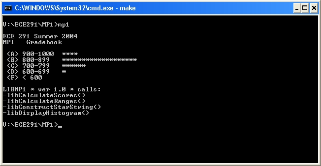

<%
title = "ECE 291 - MP1"
subtitle = "MP1"
%>
Machine Problem 1: Gradebook Database
| Assigned |
Thursday, June 17, 2004 |
| Due Date |
Friday, June 25, 2004 |
| Purpose |
Learn to write assembly code. Use looping
and branching. Perform memory accesses and manipulation. |
| Points |
65 |
Introduction
Database systems play an integral part in the world of business. A simple example is the
gradebook database for ECE 291. It stores the records of the students and their performance on homeworks, exams, and projects.
In this MP, you will be reading from a simple ECE 291 gradebook database to
calculate each student's total score, storing this score in the database, and
then displaying a histogram of the entire class to the screen, as shown below.

Problem Description
Your program is required to:
- Calculate the total score for each record
- Sort the total into its corresponding range
- Build a string of stars to represent the number of students whose scores
fall into one of the defined ranges
- Display a histogram of the database distribution
This table depicts how each database record is stored in the data file.
|
Field |
HWs |
MPs |
Exams |
Project |
Total |
|
Data |
BBBBBBB |
BBBBB |
BBB |
B |
W |
|
Offset |
0-6 |
7-11 |
12-14 |
15 |
16-17 |
Each B in the table above represents a byte. So, there are six
homeworks, five MPs, two exams, and one project that will compose a student's
total score. There is a very good chance this value will be above 255, so
we need to store the total score as a word (W). Below is an example of one
of the entries in the database:
20,20,20,20,20,20,20,30,55,73,85,80, 59, 66,115,120,0,0
Notice that there are two
zeroes at the end since we need to reserve 2 bytes (1 word) for the total score.
You compute the total score based on the equations in the course syllabus:
HWSUM = SUM(HW0+HW1+HW2+HW3+HW4+HW5+HW6)
IF ( HWSUM > 100 )
HWSUM = 100
END IF
TOTAL = HWSUM +
MP0 + MP1 + MP2 + MP3 + MP4 + EXAM1 + EXAM2 + FINAL + PROJECTAfter you calculate the total, you will need to store the result in the
student's record in the database.
MP1 Program Assignment
The gradebook data is available in the Grades variable. Each
student's total score will be used to update the corresponding cell in the RangeCount
array into which it falls. Each string of
stars will be stored in the StarString variable. When displaying the histogram to the screen, you
need to display each of the strings in the RangeStrings variable with its
corresponding StarString.
In this machine problem, the main procedure is provided for you; however,
you must write the code to replace the library proecedures.
You will replace these procedures from the LIBMP1
library by commenting out the statements calling the library procedure and adding your code. Each
procedure that you write
should match the output of the library code exactly. Each of the function calls and their functionality is described below in the
Procedures section.
The best way to get a feel for the program is to run it
to see how it is supposed to operate. You can also edit the test
file to see how various changes will affect the program execution.
The program can be run by typing mp1 at the
command prompt.
Development Log and Cover Memo
As you work on each machine problem, you will keep a simple MP development
log. The log will document your design decisions, development plan, and
debugging experiences, including the time you spent on different parts of the
machine problem. The log may be kept in any form. In general, whenever you work
on a machine problem, briefly record the starting time, significant design
decisions, progress in coding and testing, bugs you discovered, and the ending
time. Do not record simple syntax errors detected by NASM at assembly
time; these are not considered to be bugs.
For each machine problem, beginning with MP1, you will submit a cover memo of
200 to 400 words (up to one page, single spaced). The cover memo should answer
the following questions, based on the information that you record in your MP
development log.
- How much time did you spend on the design, coding, and testing of each
part or subroutine?
- What kinds of defects (bugs) did you find during the development of the
program? When did you discover these defects (during code review or during
testing)? How did you find them?
- What you would do differently for the next MP?
Type your cover memo into a plain text file in your MP1 directory.
Hints
- The LIBMP1 file contains executable library functions for each of the
routines that you need to implement.
This allows you to run the program and understand how it works before you implement it. You can test your program with any combinations of your own
code and library functions. You will only receive credit, however, for
the routines that you implement yourself.
- When debugging your code in TD, you will find it helpful to use
the memory window to show you the memory location of the file and strings.
You can also use the watch window to keep track of variables in your code.
- Do not assume that the file starts at memory location 0.
- You may define new variables as needed.
- Be very careful if you call another procedure not to destroy registers
that the calling procedure uses.
- START EARLY! This is the first MP that requires you to write your
own program. Composition is much more difficult than comprehension.
- You need to preserve register values in all of the procedures you
write. To do this, push all the registers you use in the procedure at
the beginning of the procedure. Then, pop them all in reverse order at
the end of the procedure (right before you ret).
- You need to create function headers for each of the functions you
write. Function headers should include the name of the function, the
list of inputs to the function, the list of the outputs, and any functions
that the function calls. You will lose points if you do not do this!
- Monitor the
webboard for clarifications and help.
Procedures
This assignment has four procedures. You will receive credit by replacing
each of these four procedures listed below with your own code.
| CalculateScores |
- Calculates the total score for each student
- Inputs: Grades
- Outputs: Each student's total score is written to the appropriate
place in his record in the Grades variable
- Calls: None
- Notes:
- NUMSTUDENTS is defined as a constant, and its value is the number of
students in the database. Use this constant when writing this
function.
- Store each student's total score in the appropriate place in the
database when you are finished calculating it
- Points: 20
|
CalculateRanges |
- Stores the score in the corresponding range
- Inputs: Grades
- Outputs: Each cell in the RangeCount array contains the number of students
that fall into that range
- Calls: None
- Notes:
- Again, use the NUMSTUDENTS constant when writing this function
- The ranges are:
- A - 900-1000
- B - 800-899
- C - 700-799
- D - 600-699
- F - < 600
- The A range corresponds to the first cell in the RangeCount array, and
the F range corresponds to the last cell.
- Points: 15
|
| ConstructStarString |
- Constructs a string of stars to be used in the display of the
histogram
- Inputs:
- Outputs:
- StarString = string array to hold n number of stars, where each star
represents a student within that range, and n is the value stored at
RangeCount[SI].
- Calls: None
- Notes:
- Terminate the string with a '$'
- Points: 15
|
| DisplayHistogram |
- Displays the histogram of class scores to the screen
- Inputs: RangeCount
- Outputs:
- Histogram correctly displayed on the screen
- Calls: ConstructStarString, dspmsg
- Notes:
- NUMRANGES is defined as a constant, and its value is the number of
ranges into which a score can fall. Use this constant when writing
this function.
- Points: 15
|
Procedure
- You will begin this MP with the following files:
- MP1.ASM: Program Framework
- Makefile: Specifies how and when programs are assembled
and linked.
- LIBMP1.LIB: Library functions for MP1
- LIB291.LIB: General-purpose library functions
- You may copy these files from the network drive to your home directory
with the following command:
xcopy /s V:\ece291\mp1 W:\mp1
or download the files from this server as mp1.zip
- Add your code to MP1.ASM.
- Assemble and link your program by typing make. This command reads
the Makefile then invokes NASM and TLINK to build
an executable program.
- Use TD debugger to find and correct program errors.
Final Steps
- Demonstrate your MP1.EXE to a TA or to the instructor. The TA or
instructor will verify that your program produces the correct output.
- Be prepared to answer questions about any aspect of the operation of
your program. The TAs will not accept an MP if you cannot fully explain
the operation of your code and details of your implementation. Delayed
MPs will be subject to late penalties as described in the course
syllabus (10pts/day).
- The TA will handin your MP online.